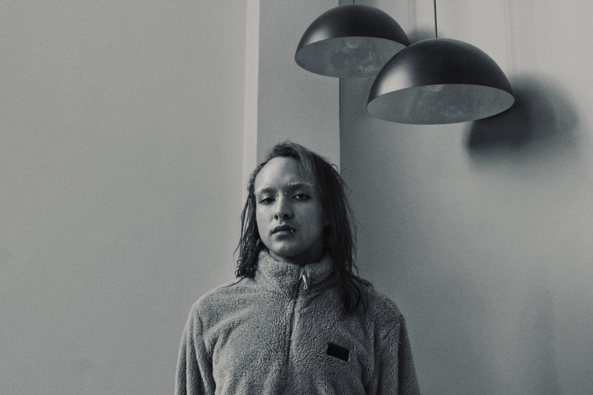
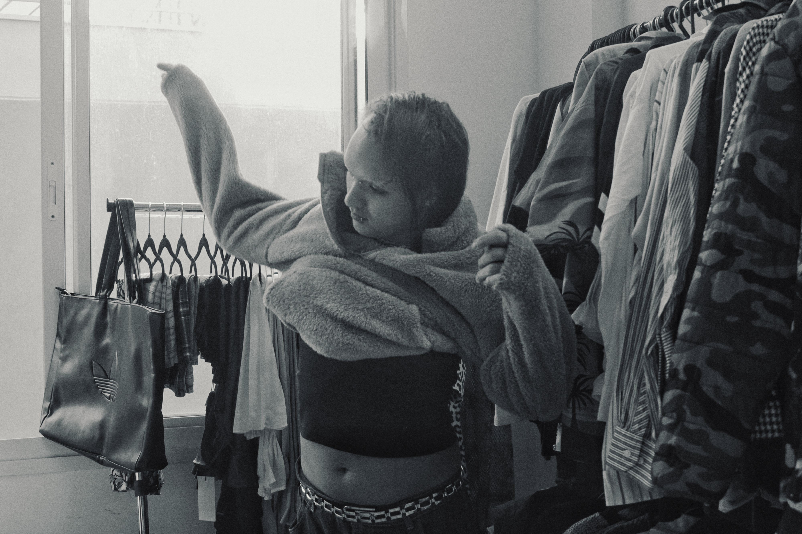

Fotografia, pessoas e presença.

Fotografar é observar.
Acredito na fotografia como uma forma de observar e preservar aquilo que, muitas vezes, acontece por um instante.
Meu trabalho nasce do interesse por pessoas, lugares e histórias — buscando registrar não apenas o que está diante da câmera, mas também a atmosfera, a expressão e os detalhes que tornam cada experiência única.
Gosto de construir imagens com sensibilidade e intenção, deixando espaço para que cada pessoa, projeto ou lugar encontre sua própria presença dentro da fotografia.


Desenvolvo trabalhos fotográficos autorais e projetos realizados em colaboração com pessoas, marcas, espaços e iniciativas que compartilham desse interesse pelo registro e pela narrativa visual.
Entre retratos, ensaios, registros documentais e eventos, procuro adaptar meu olhar a cada contexto sem perder aquilo que considero essencial: criar imagens que tenham identidade e permaneçam além daquele momento.
Quer saber mais sobre um projeto, ou ver mais do meu trabalho?